De primairy weapons. Intotaal zijn er op dit moment negenentwintig verschillende wapens in zes verschillende catogorieën. Er is altijd wel een wapen dat bij je past. Van de Shotguns die je in één schot verslinden. Naar de snelle en behendige sub machine guns. Tot de goeie all-round assault rifles. Ook heb je de Light machine guns die met hun grote magazijnen je helemaal kapot schieten. Verder heb je ook nog de marksman rifle die je op afstand in twee schoten dood hebt en de ultieme one-shot wapens, de snipers. Dan kan je ook nog eens matchen en mixen met de secondary weapons of gewoon de overkill perk aan zetten waardoor je twee primary weapons kan gebruiken. Er is dus altijd wel een combo die bij jou past. Een agresieve speler zou een sub machine gun gebruiken met een sniper of juist een set pistols. de wat voorzichtigere speler een marksman rifle met een shotgun voor als het gevecht echt op een close range fight uit komt en je hebt de speler die een beetje rondloopt met een goeie assault rifle die op elke afstand wel goed is en dus een laucnher, een set pistols of zelfs een sniper er aan toevoegd. Voor de sluipschutters is er altijd wel een sniper die je kan combineren met een melee wapen om geruisloos en snel zijn tegenstander van achteren in zijn rug te steken.
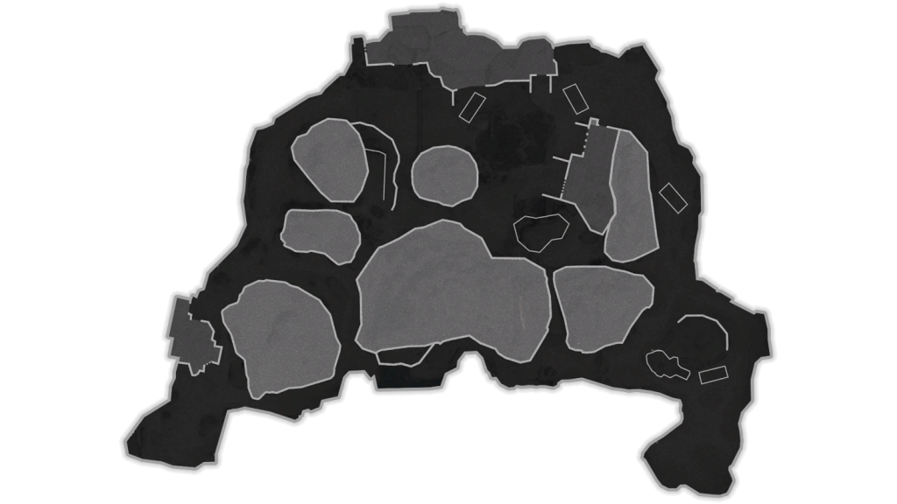
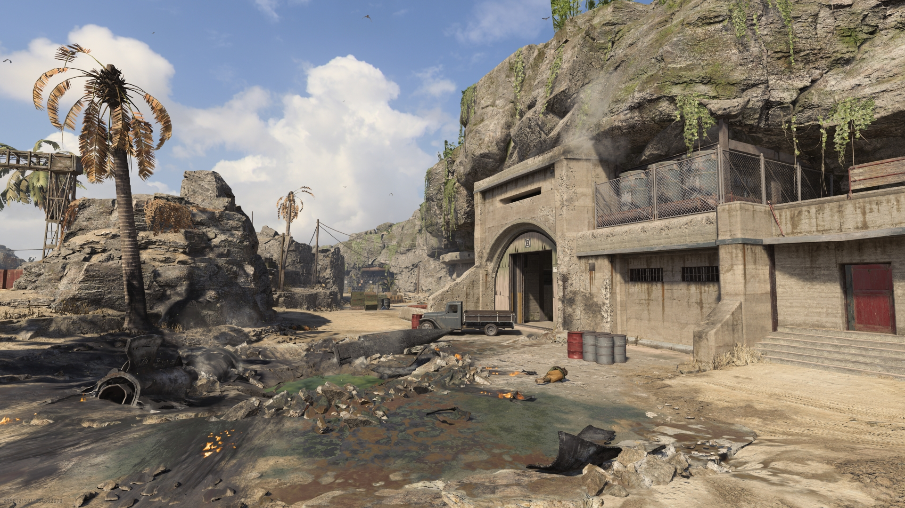
Paradise
A weapons testing site somewhere
in the Pacific Ocean hosts all task
force Operators for joint exercises.
Medium-sized three-lane-style map featuring
an underground tunnel and pools of toxic waste.
in the Pacific Ocean hosts all task
force Operators for joint exercises.
Medium-sized three-lane-style map featuring
an underground tunnel and pools of toxic waste.
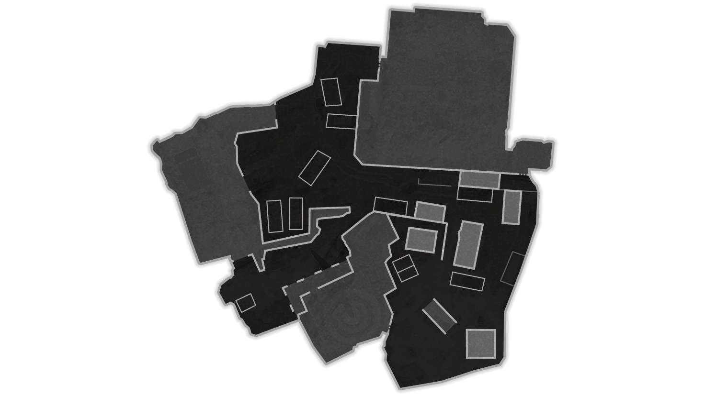
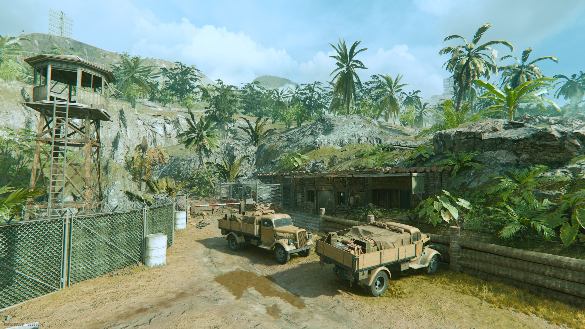
Radar
This small radar station in the Pacific
is built for fast-paced combat. Remember to
not camp on the catwalks!
is built for fast-paced combat. Remember to
not camp on the catwalks!
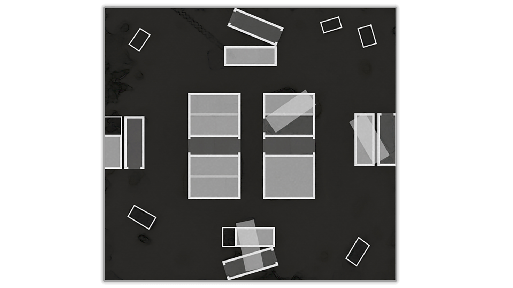
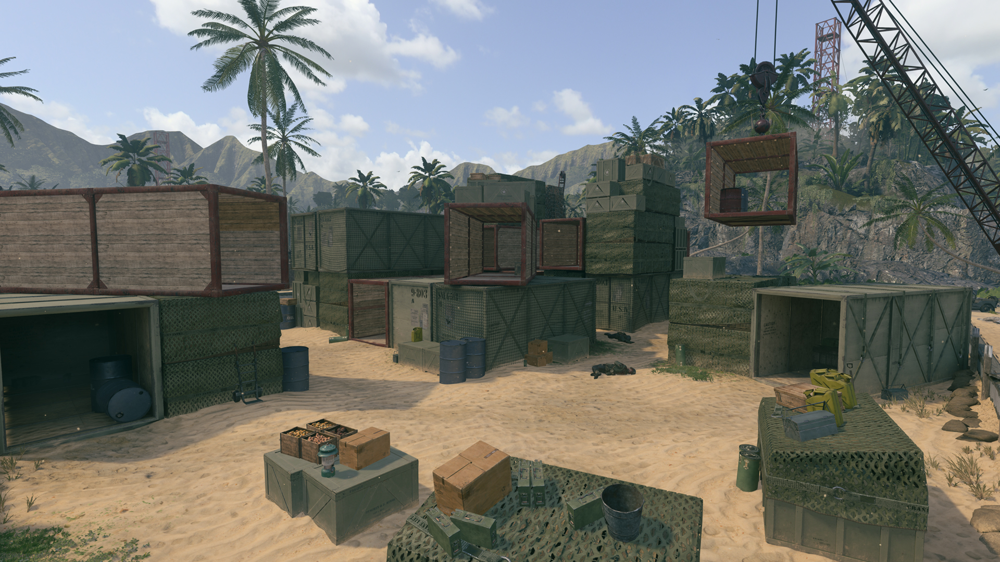
Shipment
Your Shipment has arrived in Honolulu, Hawaii.
Packaging pure chaos in a fun-sized, square-shaped box.
Packaging pure chaos in a fun-sized, square-shaped box.
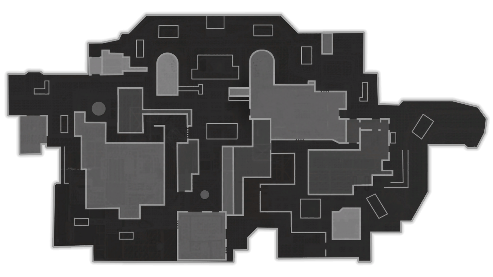
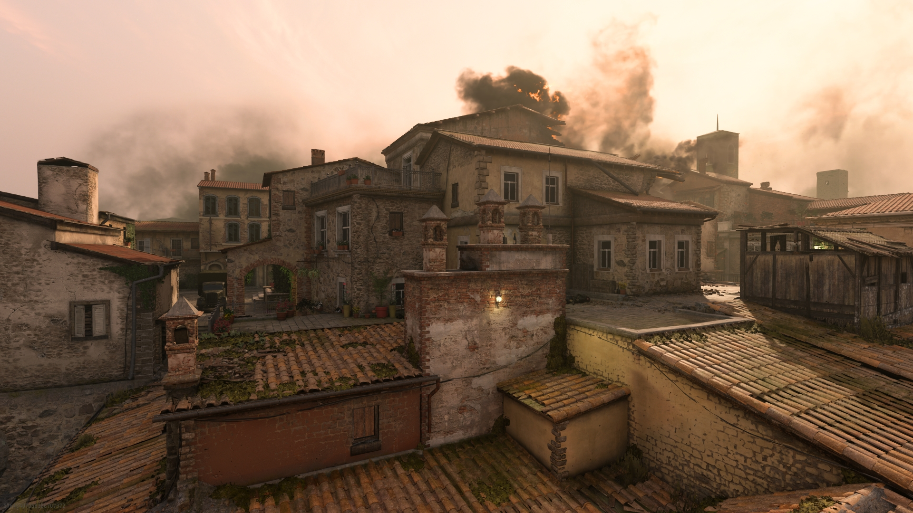
Tuscan
Within the hills of Tuscany, the Axis attempt
to burn what they cannot defend from the Axis: a
small town sitting on crucial ground for advancement.
This medium-sized map features a mix of interior
combat among Roman ruins and various buildings.
to burn what they cannot defend from the Axis: a
small town sitting on crucial ground for advancement.
This medium-sized map features a mix of interior
combat among Roman ruins and various buildings.
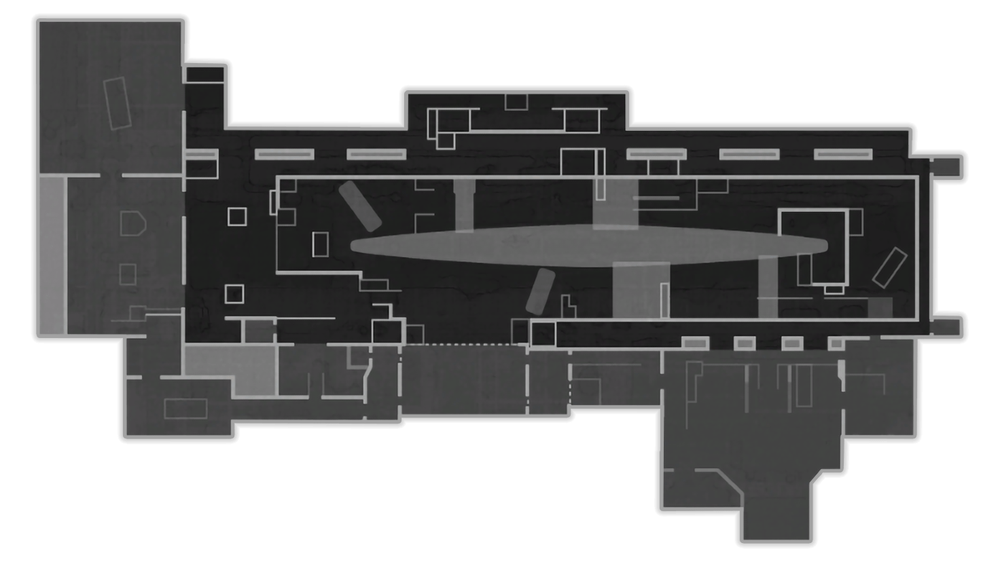
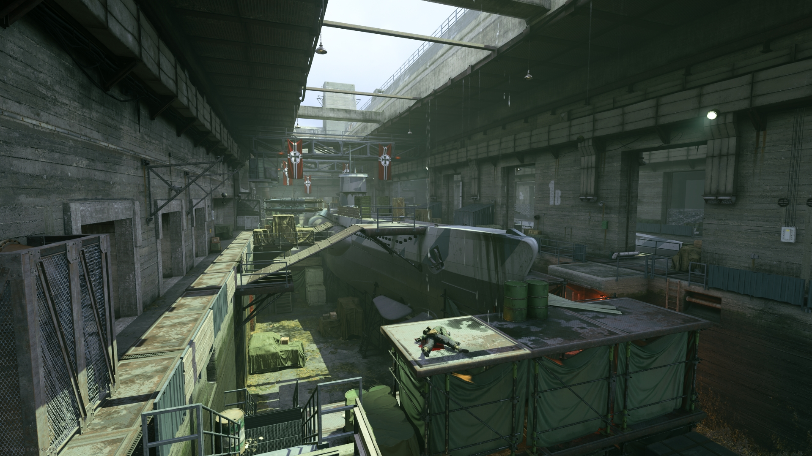
Sub Pens
A U-boat base off the coast of France, this is where
the Vanguard Special Forces make their attempt to disrupt
the Axis's Project Phoenix. This small-sized map has
a massive submarine at center.
the Vanguard Special Forces make their attempt to disrupt
the Axis's Project Phoenix. This small-sized map has
a massive submarine at center.
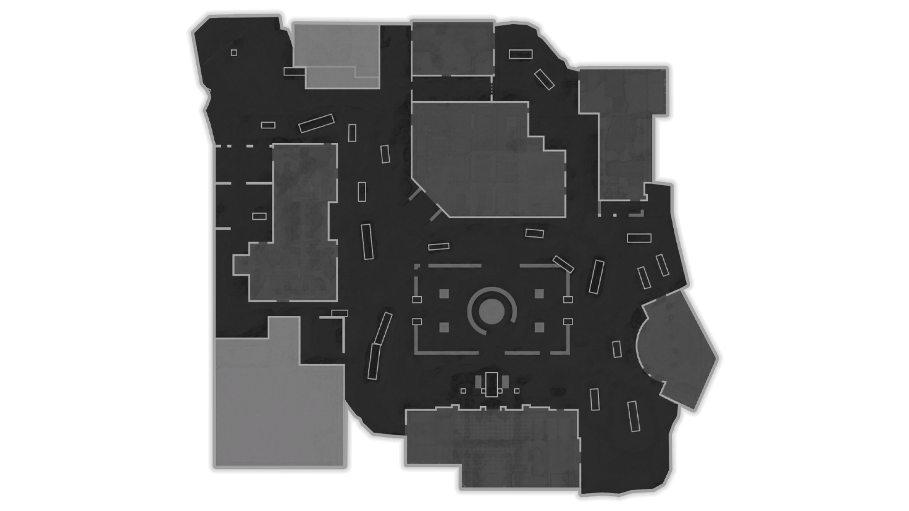
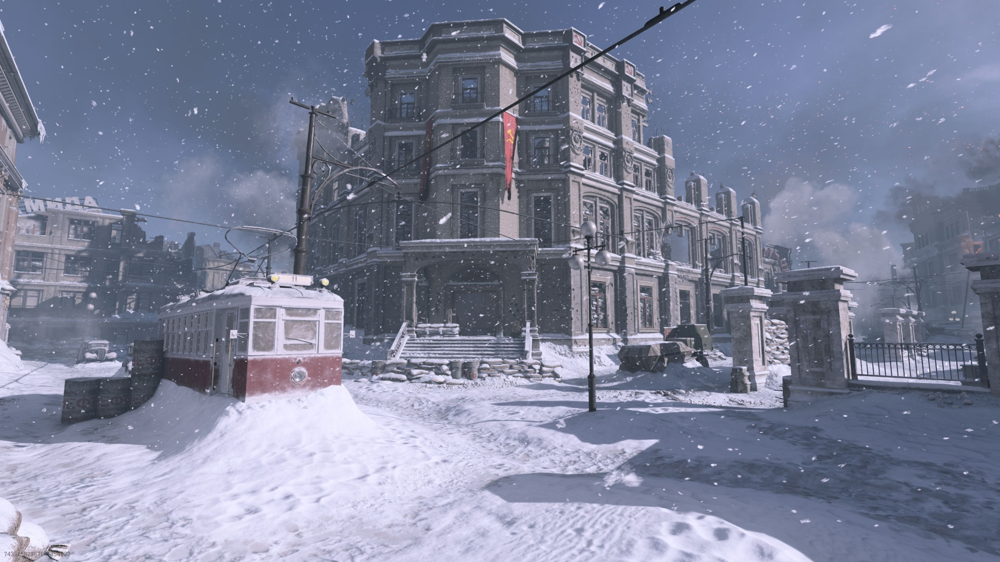
Red Star
Stalingrad in winter, based on the pivotal yet long
Eastern Front battle. One of the game's largest maps,
action here is focused around a central courtyard and the
buildings on the perimeter..
Eastern Front battle. One of the game's largest maps,
action here is focused around a central courtyard and the
buildings on the perimeter..